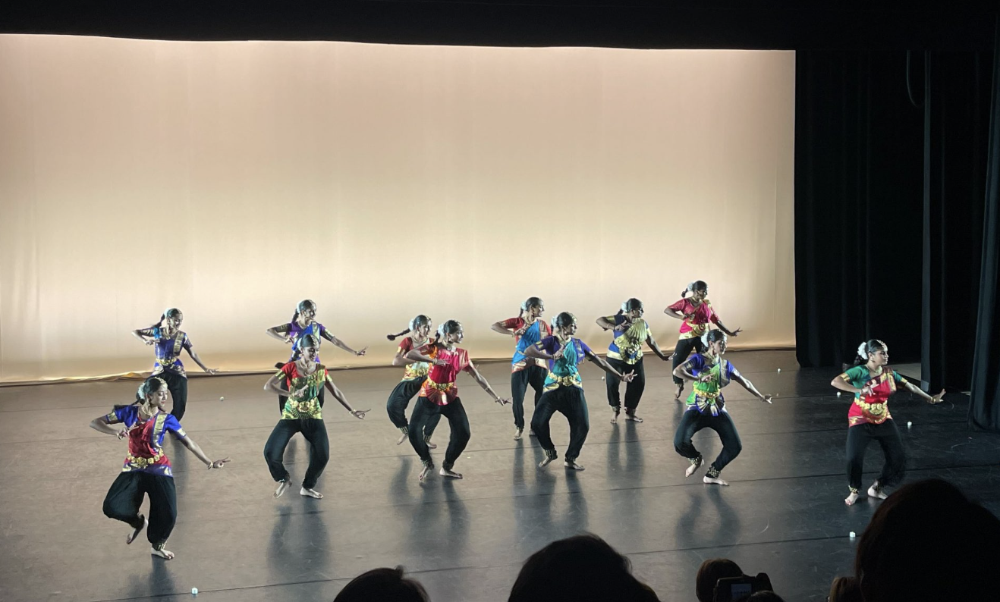
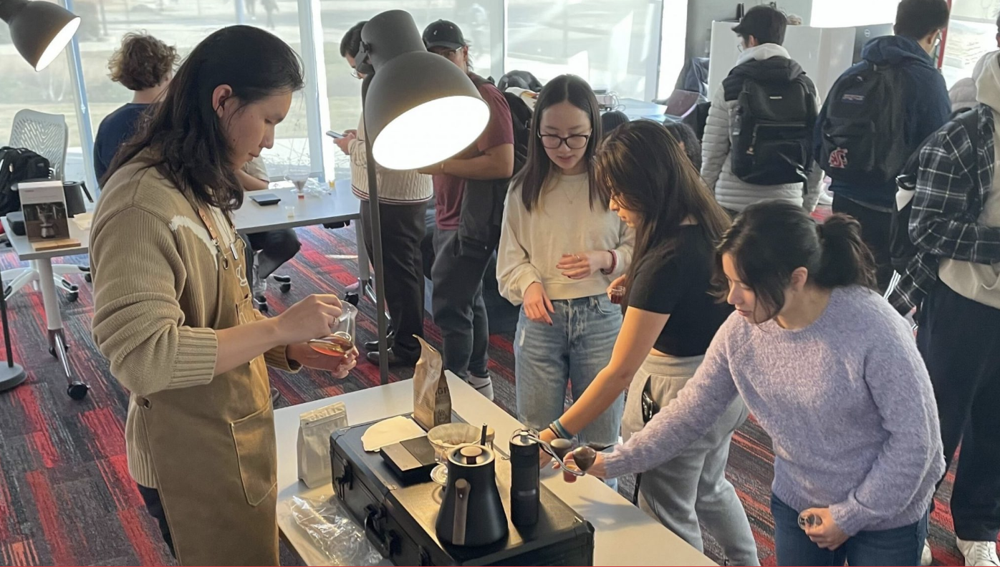
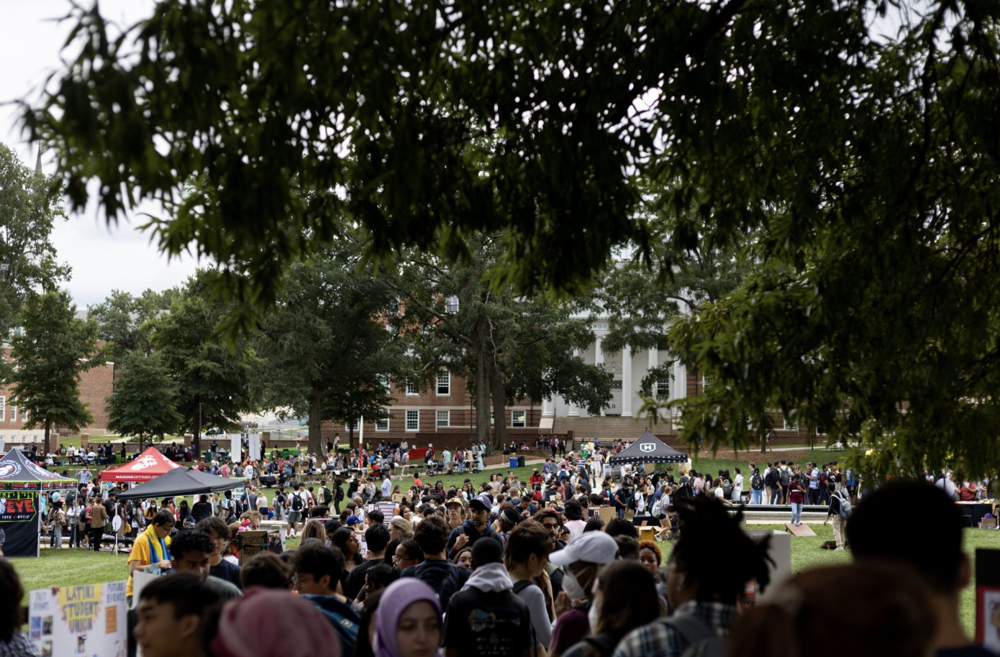
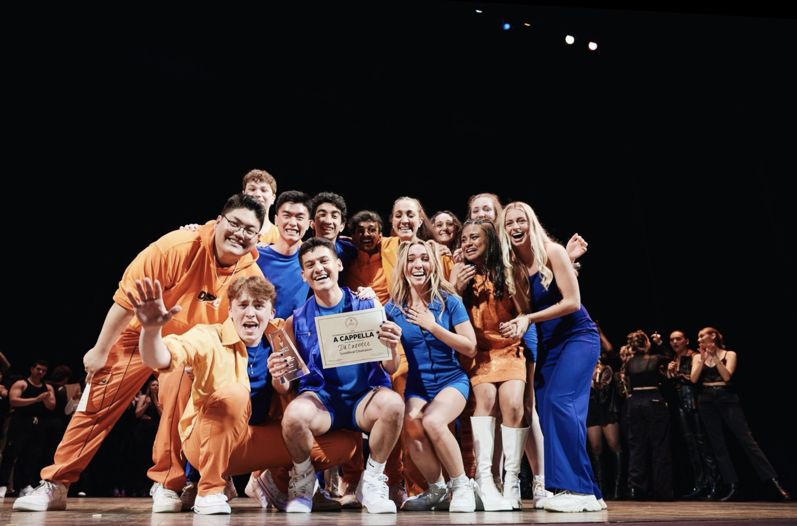

Faculty Dance Concert gives professors a creative outlet for research interests
University of Maryland dance cconcert allows professors to creatively explore their research interests through unique choreography and storytelling
UMD art professor hopes to inspire change through SEE's sustainable fashion workshop
University of Maryland art professor hopes to teach students creative sustainability practices
UMD Student Dance Association holds first performer showcase
A new student organization, Student Dance Association, holds first concert
Dream of Coffee club connects students with weekly social gatherings
 'Real-life Pitch Perfect': UMD team performs in national a cappella competition